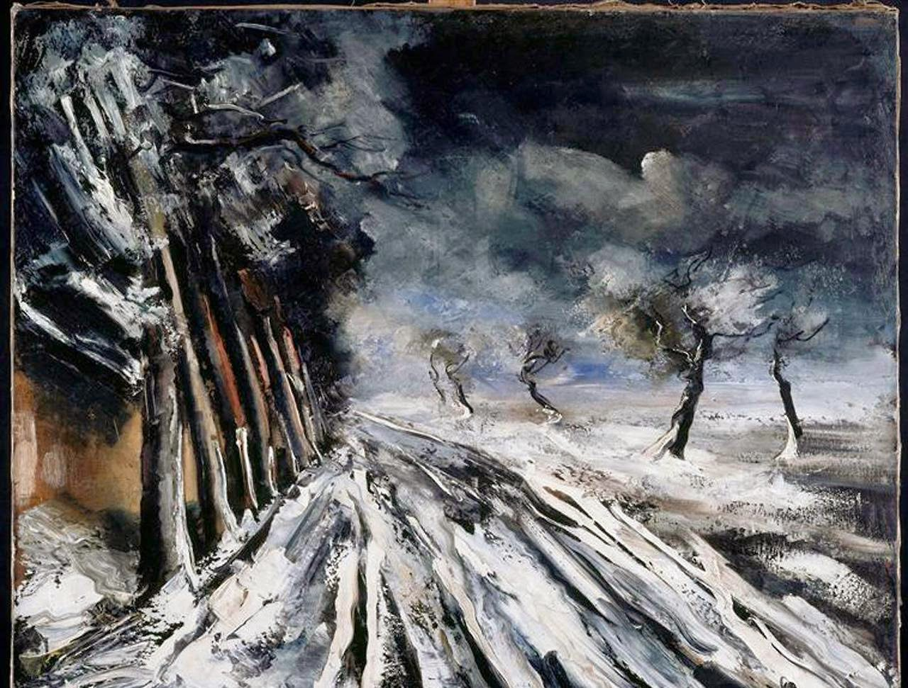

A French painter. Along with Andre Derain and Henri Matisse, he is considered one of the principal figures in the Fauve movement, a group of modern artists who from 1904 to 1908 were united in their use of intense color. Vlaminck was one of the Fauves at the controversial Salon d'Automne exhibition of 1905.
Vlaminck's compositions show familiarity with the Impressionists, several of whom had painted in the same area in the 1870s and 1880s. After visiting a Van Gogh exhibit, he declared that he "loved Van Gogh that day more than my own father". From 1908 his palette grew more monochromatic, and the predominant influence was that of Cezanne. His later work displayed a dark palette, punctuated by heavy strokes of contrasting white paint.